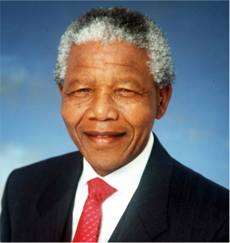
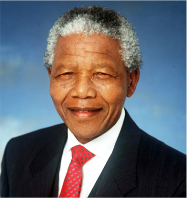

Nelson Mandela
Nelson Mandela (1918 - 2013)
Nelson Rolihlahla Mandela (Born Rolihlahla Mandela; 18 July 1918 - 5
December 2013) Was A South African Anti-Apartheid Activist And
Politician Who Served As The First President Of South Africa From
1994 To 1999. He Was The Country's First Black Head Of State And The
First Elected In A Fully Representative Democratic Election. His
Government Focused On Dismantling T He Legacy Of Apartheid By
Fostering Racial Reconciliation. Ideologically An African
Nationalist And Socialist, He Served As The President Of The African
National Congress (ANC) Party From 1991 To 1997
"I never lose.
I either win or learn"
Mandela Served 27 Years In Prison, Split Between Robben Island,
Pollsmoor Prison And Victor Verster Prison. Amid Growing Domestic And
International Pressure And Fears Of Racial Civil War, President F. W. De
Klerk Released Him In 1990. Mandela And De Klerk Led Efforts To
Negotiate An End To Apartheid, Which Resulted In The 1994 Multiracial
General Election In Which Mandela Led The ANC To Victory And Became
President. Leading A Broad Coalition Government Which Promulgated A New
Constitution, Mandela Emphasised Reconciliation Between The Country's
Racial Groups And Created The Truth And Reconciliation Commission To
Investigate Past Human Rights Abuses. Economically, His Administration
Retained Its Predecessor's Liberal Framework Despite His Own Socialist
Beliefs, Also Introducing Measures To Encourage Land Reform, Combat
Poverty And Expand Healthcare Services. Internationally, Mandela Acted
As Mediator In The Pan Am Flight 103 Bombing Trial And Served As
Secretary-General Of The Non-Aligned Movement From 1998 To 1999. He
Declined A Second Presidential Term And Was Succeeded By His Deputy,
Thabo Mbeki. Mandela Became An Elder Statesman And Focused On Combating
Poverty And HIV/AIDS Through The Charitable Nelson Mandela Foundation.


